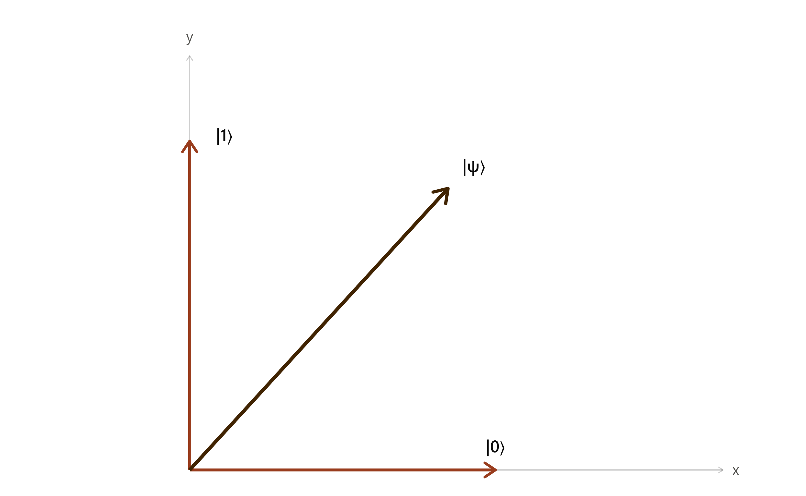

The Four Fundamentals of Quantum Computing
The entire universe of quantum physics and quantum computing can seem bizarre and counterintuitive, as it cannot be adequately described by the laws of classical physics alone. This is because its phenomena occur on a very small scale, that is, on a scale that we cannot observe in our everyday lives, yet this is how the world truly works “behind the scenes.” It is from these extraordinary behaviors of quantum physics that the great opportunity for computing arises: taking advantage of these peculiarities — at least from the perspective of common sense.
The bits of classical computers are replaced by quantum bits (qubits), which we will explore later in this section, allowing our computers to operate not as our eyes are accustomed to seeing, like the engine of a car that heats up and a tire that wears down over time on the asphalt, but like an Alice in Wonderland who, after going down the rabbit hole and entering a world where the rules she knew no longer seem to apply.
Quantum computing takes us somewhere similar: we do not need to abandon logic, but we do need to let go of some of the intuitions we have developed from the classical world.
The four principles of quantum computing — superposition, entanglement, interference, and decoherence — are related to the behavior of qubits and complement each other in helping us understand how quantum information is processed.
What are qubits?
A qubit is the fundamental unit of quantum information and can be implemented in quantum hardware through different technologies, such as superconducting circuits, ions trapped by electromagnetic fields, atoms, and photons. Each technology has its own characteristics and experimental requirements.
For this reason, one of the major challenges in quantum computing is keeping qubits sufficiently isolated from the external environment, preventing unwanted interactions from interfering with their quantum state. These components, besides being extremely small, are highly vulnerable to external disturbances, such as temperature variations, vibrations, and even electromagnetic radiation, which can interfere with the state of the qubit.
Like classical bits, qubits can also represent the states 0 and 1. However, qubits have additional quantum properties that allow them to process information in ways that go beyond the capabilities of classical bits, especially when it comes to decision-making.
How do computers make decisions?
Breaking down concepts
Classical computers use logic gates, such as AND, OR, and NOT, which implement logical operators. Basically, they use these operations to evaluate conditions and follow certain paths when making decisions, which can be limited for many of the types of problems we need to solve today.
And that's where the magic of quantum computers comes in.
Quantum Computers Making Decisions
One of the main principles behind decision-making in quantum computers is superposition.
Superposition
A very simple and commonly used analogy to understand the concept of superposition is a coin. Imagine you toss a coin into the air and want to find out whether it will land on heads or tails. Before it lands back in your hand, it spins in the air, which makes it seem as if it is both heads and tails at the same time.
What happens during decision-making in quantum computers is similar. Instead of simply following one path at a time, a qubit can exist in a combination of the states 0 and 1, just like heads and tails in our analogy.
This is what we call superposition. It is the ability of a quantum system to exist in a combination of possible states before it is measured. In the case of a qubit, this means that it can be in a combination of the states 0 and 1, rather than being limited to only one of them at a time.
Combinations of States
What does “combination of states” of a qubit mean?
Well, to demonstrate this phenomenon, we would need some knowledge of Linear Algebra. However, we are simplifying things here.
First of all, understand that the state of a bit means that its value can be either 0 or 1, and a qubit can also assume these values, which are its basis states. What differs in quantum computing is what can happen to the qubit before it assumes one of these basis states.
Unlike classical computers, quantum computers use
quantum gates,
which can transform the state of a qubit in ways that go beyond simply defining
its value as 0 or 1, as we see with logic gates.
They can, for example, put a qubit into a state of superposition,
in which the states 0 and 1 are involved in a single quantum description.
Within Linear Algebra, the study is mainly focused on vectors.
For now, imagine a Cartesian plane where we have two vectors representing the states
0 and 1.
When we talk about superposition, the vector that represents it can point in a different
direction from these two vectors representing 0 and 1,
in a direction that involves both.
Notice that it does not simply represent 0 or 1,
but involves both possibilities in a single quantum state.

Take a look at the image. Here, we have two axes representing the two basic possibilities of a qubit: the states |0⟩ and |1⟩.
The vector pointing to the right, in a lighter coffee color, represents the state |0⟩. This symbol, in the form | ⟩, is a notation from Linear Algebra called a ket, which is used to represent vectors and the states they carry. In this case, the value is 0, which corresponds to one of the possible states of a qubit.
Similarly, the vector pointing upward, also in a lighter coffee color, represents the state |1⟩. The notation is the same, but now we are representing the state 1.
But then, where does superposition come in?
The dark coffee vector, pointing in a direction between the first two, represents the state |ψ⟩ (pronounced “psi”). This is the symbol conventionally used to represent an arbitrary quantum state. In this case, it represents a qubit in superposition, meaning a combination of the states |0⟩ and |1⟩ in a single quantum state.
And here is an important detail: being in superposition does not mean that the vector has to point exactly halfway between |0⟩ and |1⟩.
The vector |ψ⟩ can point in different directions. It can be closer to |0⟩, closer to |1⟩, or somewhere else in between. Each direction represents a different combination of these two states and, consequently, different probabilities of obtaining 0 or 1 when we make a measurement.
It is precisely this direction that helps us visualize how the states |0⟩ and |1⟩ are combined in that qubit.
This is precisely what we mean when we talk about a combination of states, which is our superposition.
I know, it may seem a little confusing right now, but it will become clearer as you read on.